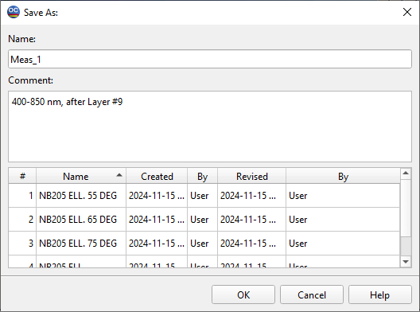

Saving Current Measurements and other data
- OptiChar allows you to make temporary changes to the
measurements loaded in memory without affecting the stored versions, utilizing the Modify Measurements command from the Characterization Menu.
- If you are satisfied with the modified versions and want to save
them for future use, you can select the appropriate Save commands from the Data Menu.
- Characterization results can be saved to the Substrate and Layer
Material databases. Note that these databases are fully compatible with OptiLayer and OptiRE. To save characterization results, choose either the Substrate to Database or Layer to Database command from the Data Menu. The Wavelength Region for Saved Data dialog will appear, enabling you to change the wavelength range and specify the number of spectral points in the saved data file.
- To save measurement data, substrate, or layer material for
permanent storage on your disk, you should provide a name for the new file.
- This name doesn’t have to conform to typical Windows file naming
conventions; you can choose any name, including those with spaces and special characters. An optional comment can also be added. Both the name and comment for any existing or newly created file can be changed later using the Rename command.
- To avoid duplicate names, the Save Measurements, Save Substrate,
and Save Layer Material dialogs display existing data files in the corresponding databases.

Note that when you try to load a new measurements data file while that in the memory has been modified but not saved, you will be warned on losing changes made.